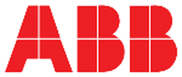
Wired · KNX
ABB i-bus® KNX
The backbone for new-build. Open KNX field layer, DALI lighting, HVAC control and metering, with ABB Millennium switch ranges as the finish the client actually touches.
Open-protocol automation on ABB i-bus® KNX — lighting, climate, shading and metering under one head-end, engineered and commissioned by our own team in Muscat.
Principal partnerships
We hold the automation stack directly from the manufacturer — not through a reseller chain. That means genuine hardware, factory warranty, in-country stock and engineers trained by the brand that built it.

The backbone for new-build. Open KNX field layer, DALI lighting, HVAC control and metering, with ABB Millennium switch ranges as the finish the client actually touches.
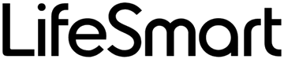
The retrofit answer. A complete wireless ecosystem — lighting, climate, sensing, cameras and scenes — for finished properties that cannot take new containment.
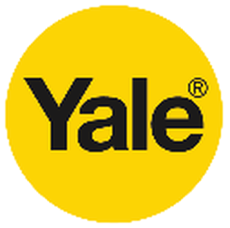
Keyless entry integrated into the same scene logic as lighting and climate, so access is part of the building's behaviour rather than a separate app.
Protocol gateways that bring third-party HVAC plant, meters and legacy panels onto KNX, BACnet or Modbus instead of stranding them outside the head-end.
The residential ecosystem. Wired PIERRE Pro or wireless PIERRE Wave, with 10-inch control panels, intercoms, locks and sensors on one platform that keeps working locally when the internet does not.
System scope
Energy is the largest controllable line in a building's running cost. The right control layer turns it into a number you can measure, attribute and reduce — without anyone inside noticing a compromise.
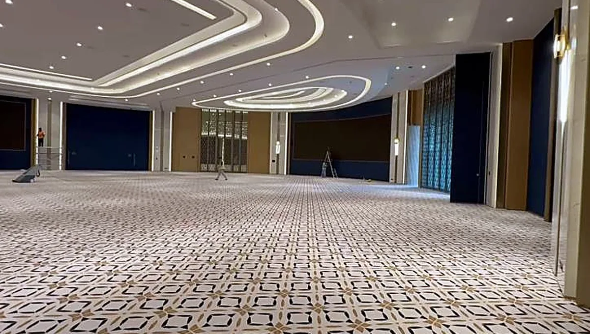
DALI and KNX lighting with occupancy sensing, daylight harvesting and scene control, zoned per space type.
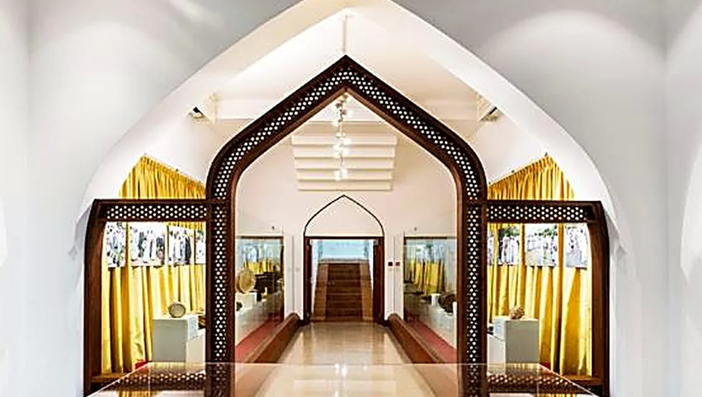
One head-end for HVAC plant, lighting, metering and life-safety status. Open protocols — KNX, BACnet, Modbus — so the asset is never locked to one vendor.
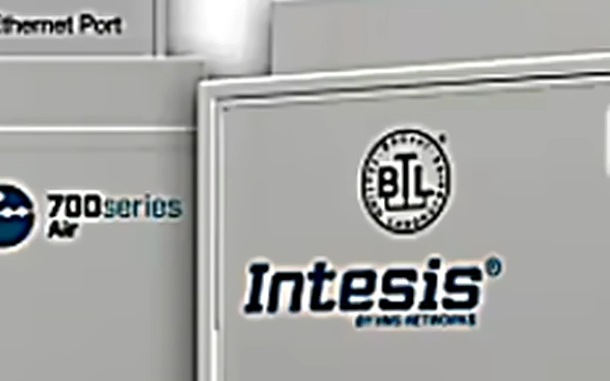
Room-level control, fan coil and VAV sequencing and occupancy setback — wired straight into the plant we deliver under HVAC.
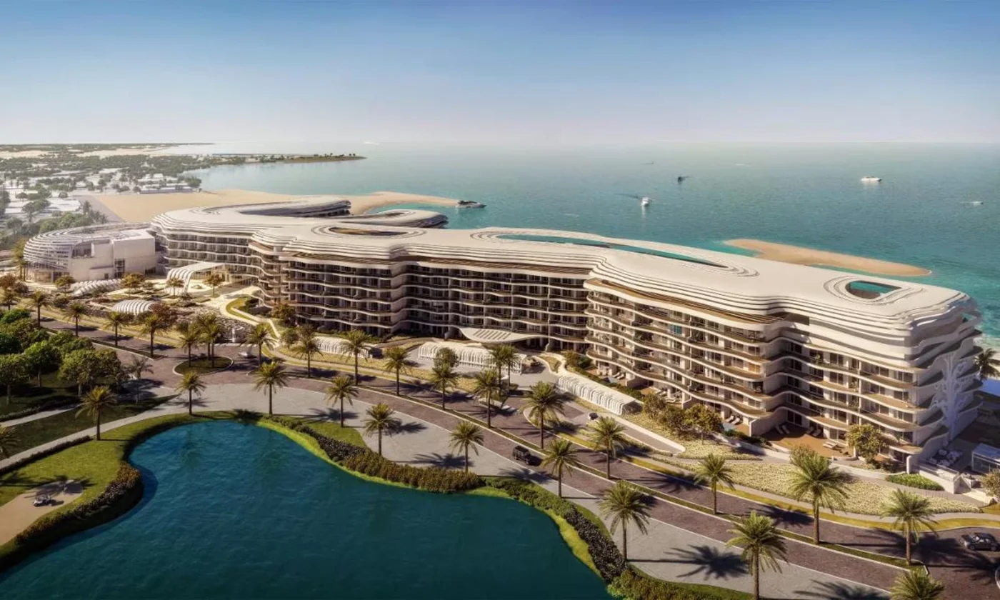
DMX and DALI façade control with colour scenes, national-day programmes and astronomical scheduling — the part of the building everyone sees, running on the same head-end as everything they don't.
Reference: The St. Regis Al Mouj Muscat — lighting control across the resort, ballrooms and restaurants, delivered to operator brand standards. See the project ↗
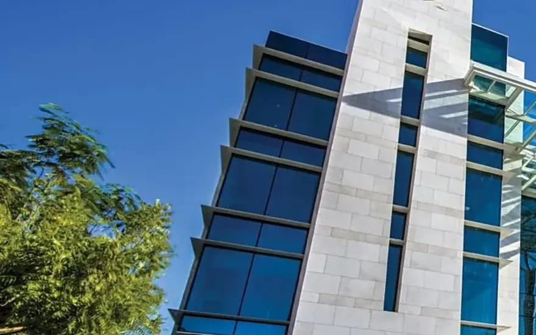
Sub-metering by tenant, floor or system with trend logging — a consumption baseline that exposes energy drift before it reaches the bill.
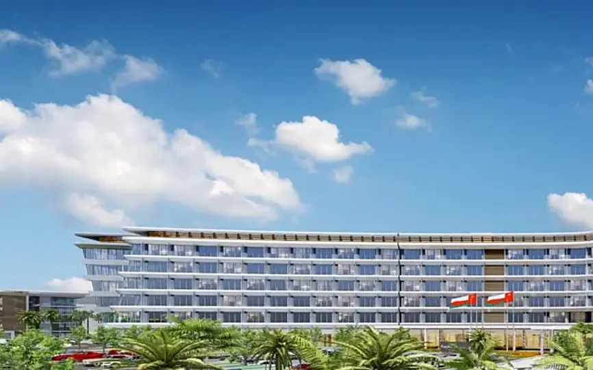
Wired KNX for new-build villas and palaces; LifeSmart CoSS wireless where a finished property cannot accept new containment.
Delivered scenes
Private villas in Muscat, 2024 — owners not named. Every fitting is on a dimming channel with astronomical sunset scheduling, so the house lights itself at dusk without anyone touching a switch.
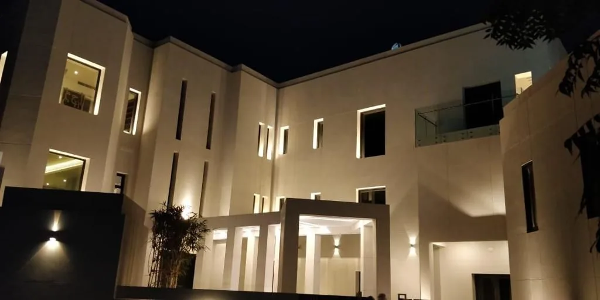
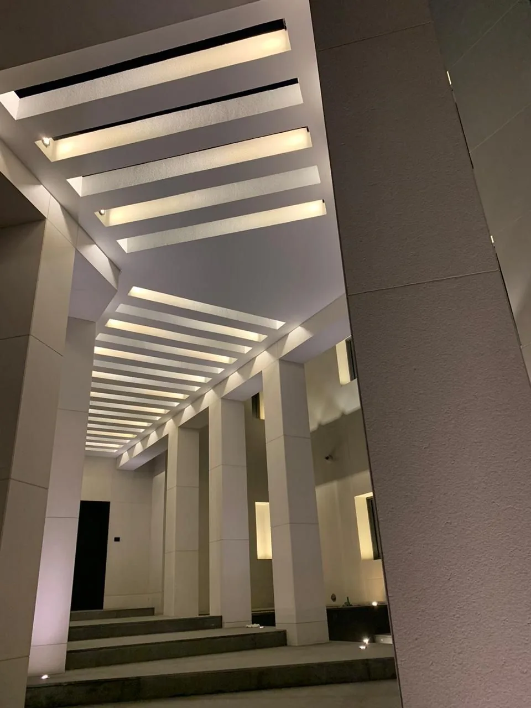
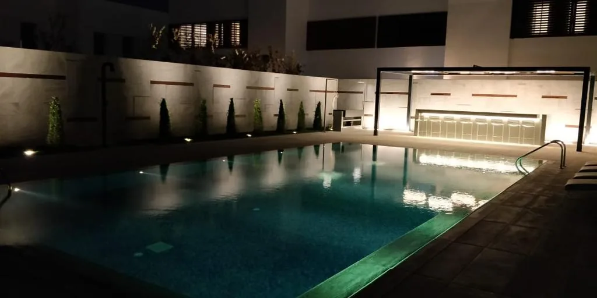
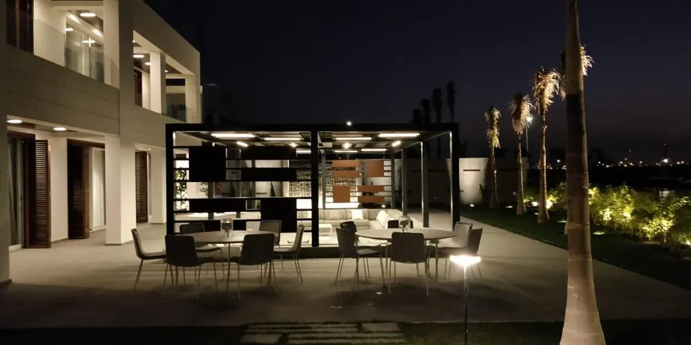
Choosing the platform
We hold both platforms, so the recommendation follows the building rather than the stock we happen to carry. A concrete villa under construction and a finished apartment are not the same problem.
| Consideration | ABB i-bus® KNX — wired | LifeSmart CoSS — wireless |
|---|---|---|
| Best suited to | New build and full refurbishment, where containment can still be run | Completed properties, fit-outs and phased upgrades |
| Runs without internet | Yes — logic executes on the bus itself | Local scenes hold; remote access needs connectivity |
| Install disruption | Cabling required during first fix | No chasing, no new containment |
| Scale | Villas, palaces, hotels, whole commercial floors | Apartments, villas, single floors and staged rollouts |
| Integrates with BMS | Native — KNX, BACnet and Modbus to the head-end | Via gateway where a head-end is required |
| Handover package | Full topology, group addressing and project files | Account, device schedule and scene documentation |
Both platforms are stocked in Muscat and commissioned by our own engineers. On mixed estates we run them side by side and bring both onto one head-end.
Two minutes
Six questions, no forms. You get a wired, hybrid or wireless recommendation with the reasons, then the simulator opens on that platform.
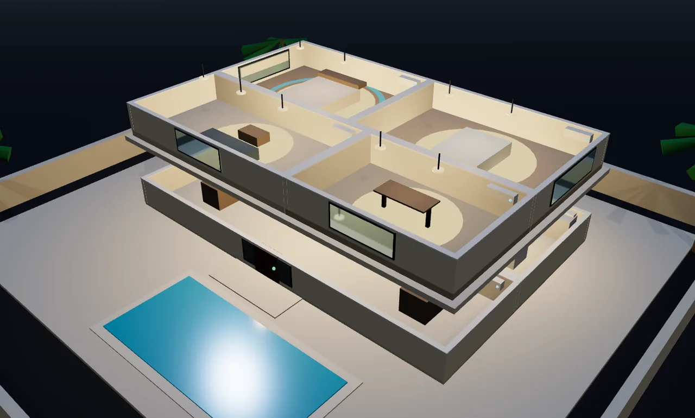
Live 3DNew — interactive
Walk through a two-storey villa, switch scenes from an ABB SmartTouch® 10 panel and an ABB Yurika keypad, watch every light, blind and lock respond — then get an indicative budget for your own built-up area in seconds.
In the owner's hand
Engineering decides whether a building performs. The app decides whether anyone enjoys living in it. Both platforms ship with a maintained mobile app, and we hand over the account structure with the building.
Accounts, device names and scene structure are set up in the client's own name and handed over documented — not left registered to the installer.
Smart Experience Centre
Lighting scenes, motorised shading, climate control and panel interfaces running as one integrated environment. Consultants and clients validate the control philosophy, hardware finish and user experience in person before it reaches the specification.
How it works
Sensors report in, actuators act out, and the logic lives in the wiring — not in a cloud account somebody has to keep paying for.
In service
Yale access, LifeSmart panels and scene control running in delivered residences — the same hardware and the same commissioning discipline we bring to a hotel or an office floor.
What you are looking at
Why architecture matters
The decisions that determine whether a building automation system still performs in year ten are made at design stage, not at commissioning.
Technical questions
We design primarily on KNX for the field layer and BACnet/IP or Modbus at the plant and head-end layer. Legacy equipment is integrated through gateways where native protocol support is absent, and we survey existing panels before committing to an integration approach so the scope is known rather than assumed.
By specifying open protocols and transferring the complete programming set at handover — topology, group addressing, device schedules and project files. The client can appoint any competent KNX or BACnet integrator afterwards. This is a deliberate commercial position: we would rather be retained on merit than by dependency.
Compliance statements against the specification, manufacturer authorisation letters, control philosophy documents, riser and topology drawings, device schedules, and I/O point lists. Testing and commissioning records follow the agreed witnessing regime.
Pre-commissioning checks on containment, addressing and power, followed by point-to-point verification, then functional performance testing of each control sequence against the philosophy. Results are recorded per sequence and witnessed by the consultant where required.
Yes. Sub-metering architecture is designed at the outset so consumption can be attributed by tenant, floor or system. Trend data is retained and exported for reporting, and the analytics layer highlights energy drift so corrective action rests on evidence rather than assumption.
The earlier the control layer is coordinated with the electrical and mechanical design, the less it costs and the better it performs. Send us drawings or a specification.